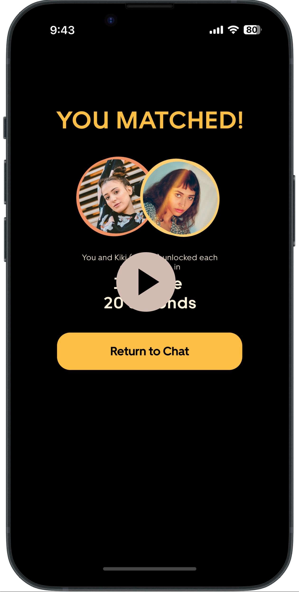
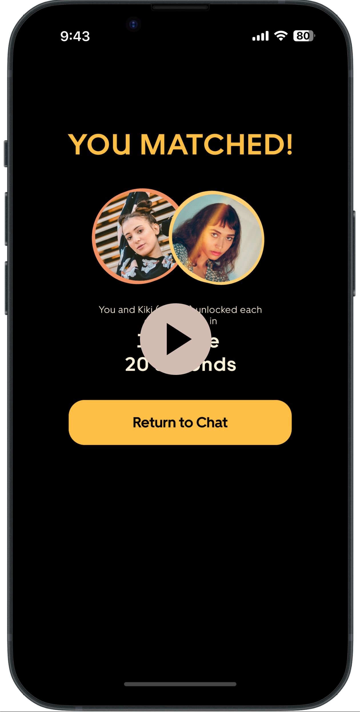

1 个月 (2024 年春季)
交互设计
UI设计
Bumble 交友软件
导师: Auldyn Matthews, Sinan Goral
个人项目

OVERVIEW
基于位置信息的地图功能
该项目开启了Bumble 遇见（Vibely）的创作之旅，这是 Bumble
约会应用中的一个地图功能，旨在通过利用实时位置服务来改变用户的连接方式，从而增强数字交互体验。
通过允许用户创建反映个人心情或偏好活动的头像，自定义个性签名，Vibely
为Bumble档案增添了个人表达的新维度。这个交互式地图以动画头像的形式展示附近的用户，使数字空间触手可及。
ROLE
产品/UI/交互设计
作为一个人的团队，我的角色涵盖了设计的各个方面：
- 产品设计: 根据用户需求和商业目标，定义 Vibely 的功能和特性，如头像自定义、基于实时位置的互动和通知系统。
- 用户界面设计: 构建 Vibely 的视觉元素，确保设计直观并与 Bumble的品牌形象保持一致，包括颜色、字体、图标的选择等。
- 交互设计: 开发用户与 Vibely 互动的动态方面，从点击头像开始聊天到获取消息提示。创建一个无缝、引人入胜的用户旅程，鼓励积极参与并促进真正的连接。
1. 创新之旅：设计的演进

我的探索之路
在这段充满创意的探索旅程中，我深入挖掘了用户的行为习惯、偏好以及传统在线约会平台的局限性。我的旅程从一场充满灵感的头脑风暴会议开始，伴随着深入的市场竞争分析，逐步发展出了初步的概念想法。通过不断的迭代和用户反馈，我精细打磨了用户的使用流程和Vibely的核心理念，让一切变得更加完美。
我不仅仅满足于定性的洞察，更通过探索性的数据分析进一步研究和完善我的策略。这个过程中，我发现了两个关键的洞察，它们成为了Vibely开发的基石：
转化率的奥秘：我注意到随着时间的流逝，转化率逐渐下滑，似乎用户的参与热情和兴趣会随着时间的增长而减退。这一现象提醒我，我需要一些新的元素来重新点燃用户的热情和参与度。这也为Vibely引入一些革命性功能提供了强有力的依据。
互动的魔力：数据揭示了一个有趣的现象，那就是用户的互动次数与转化率之间存在着正相关关系。换句话说，那些更频繁与他人互动的用户，转化为付费用户的可能性也更高。这一发现强调了促进用户间互动的重要性，同时也证明了一个更具互动性和吸引力的功能，可以有效提升转化率。
基于这些深刻的洞察，Vibely的设计和开发旨在提高Bumble平台上用户互动的质量，同时解决我已经识别到的参与度和转化率的问题，确保新功能能够为用户带来更加积极的体验，同时也为业务指标做出贡献。

前期决策
在设计的每一步中，我都坚持以提升用户体验和增强用户参与度为核心。Vibely的每一个细节，从个性化头像的定制到实时通知的即时性，都经过了精心考量，以确保它们能够满足用户的需求，并与Bumble的战略愿景保持一致。我特别注意不断完善设计简报，融入用户访谈中获取的新洞察，以确保项目保持正确的方向，不会仅仅反映我的个人偏好。比如，引入表情符号头像和系统生成的别名，就是一项旨在保护隐私的同时，建立社区感并增强用户体验乐趣的战略举措。

面对Bumble新用户，特别是那些生活在小城市或对投资高级功能犹豫不决的用户所遇到的独特挑战时，采取针对性的问题框架方法至关重要。我识别出的核心问题包括匹配不足和对应用功能探索有限。在用户基数自然较小的小城镇，标准的推荐算法可能无法很好地服务于这些用户，因为这些算法通常优先考虑地理接近性。此外，对于那些在没有成功匹配的情况下就用完了喜欢的用户来说，不愿意花钱购买如Spotlight等高级功能，以及由此产生的挫败感，进一步加剧了挑战。
为了解决这些问题，同时利用地理定位功能，我脑洞大开，提出了四个创新的概念：
- 活跃提醒：利用实时通知功能，当有高度兼容的潜在匹配对象出现在附近时，提醒用户，增加连接的即时性和相关性。
- 心情匹配：该概念提出通过用户当前的心情或期望活动来匹配用户，而不仅仅是地理位置，使匹配过程更加深入。
- 闪聚：旨在促进即时的社交互动，允许用户组织或加入与附近有相似兴趣的成员的临时聚会，非常适合临时起义的咖啡休息或午餐约会。
- 偶遇记录：通过记录你一天中偶遇的用户，这个功能旨在创造一种熟悉感和意外的相遇，让数字连接在现实世界中有迹可循。
经过对可行性的考量，我决定将前三个概念——活跃提醒、心情匹配和闪聚——的优势结合起来，设计原型。

关键决策
最关键的决策之一是实现一个简化的数字地图，以头像的形式显示附近的用户。这一功能将使Vibely与传统约会应用的特性区分开来，同时为用户提供了一种新颖的方式来可视化和与周围环境互动。另一个重大决策是启用当匹配用户在0.5英里范围内时的通知功能。这将为潜在的相遇增添一层即时性和兴奋感。
在设计过程中，我与用户联系，收集他们对新兴Vibely功能的想法。我匹配到的一位用户Hannah分享了她对该功能的兴奋之情，她的信息中充满了对实时地图概念的热情。她写道，"看到附近的人感觉像是在线约会的一次新鲜尝试。它让连接感觉更加实在。"
在与另一位用户亚历克斯的聊天中，关于接近提醒的对话采取了一个有趣的转折。他评论道，"当潜在的匹配对象就在附近时得到一个推送通知，可能正是我想要的那种即兴感！🤔"捕捉到了通知功能可能带来的兴奋本质。
然而，是与马特的聊天引入了对Vibely参与机制的一个关键视角。Matt，一个以其深思熟虑和详尽的信息而著称的用户，对最初要求交换20条信息以建立匹配表示了担忧。他解释道，"我倾向于写更长、更有意义的信息，"，"在短短5分钟内达到20条信息的门槛感觉有点令人生畏。它可能会从一开始就阻碍更深入的对话。"
与Bumble用户的这些虚拟对话提供了宝贵的洞察。汉娜和亚历克斯的热情验证了该功能对增强用户互动的新颖方法，而马特的反馈促使重新评估了参与门槛，确保Vibely能够迎合Bumble社区内多样化的沟通风格。

设计的演变
Vibely的完善之旅通过一系列用户测试会议来标记，每一次都揭示了塑造功能演变的关键见解。
为了进一步丰富用户体验并提高参与度，我从Duolingo寻找灵感，并引入了交互式小部件和及时通知。这些小部件能够动态适应，反映附近用户的氛围和一天中的时间，创造出更加个性化和响应性的生态系统。
可选的口号输入功能的添加直接来自用户反馈。另一位测试者Raquel建议说，"要是我能输入一些个性签名之类的短句，展示我是什么样的人或我在寻找什么就好了。" 这一功能允许用户除了头像之外，还能表达他们的意图或心情，为他们的数字存在增添了深度。这种从真实姓名到别名的转变是另一个由用户反馈推动的关键变化。"我喜欢一点神秘感，使用别名让人感觉更安全、更有趣。"
新用户引导流程体验也进行了改进。最初，一些用户如Linxi在没有指导的情况下难以完全理解Vibely的功能范围。因此我增加了新用户引导界面，简洁地传达了功能的本质以及如何玩转Vibely。
最后，作为表示兴趣的手势发送花朵的电子，源于我在用户流程演示中设置的一个情景——用户Kay设置自己头像为一个拿着玫瑰花束🌹的小人，和附近伤心的Allison聊天。Mason沉思道，"如果我真的可以发送我在头像中拿着的那些花应该会很有意思！" 这个设置不仅与我产生了共鸣，还启发我设置了一个新的转化点。我在这个想法上进行了迭代，整合了一个功能，允许用户相互发送虚拟花朵，增加了互动层面和参与的可能性。
每一次迭代都是受到直接用户输入和对他们反馈的创造性解决方案的启发，使其更接近于一个直观、引人入胜的功能，更能与用户对有意义和动态连接的渴望产生共鸣。

设计动机
Vibely设计的演进的核心动力，是超越快节奏的基于左滑右滑的约会应用中常见的肤浅用户参与。这有助于引入现代数字互动中缺失的真实性和连接的层面。从传统地图过渡到更抽象、用户友好的布局，目标是简化数字景观，创造一个欢迎且易于探索的空间。5分钟聊天的主要互动范式是一种有意的努力，旨在将实时的兴奋感和及时性注入用户互动中，鼓励超越表面层次的联系的有意义交流。
2. 核心功能
头像定制
用户可以通过头像和标语个性化他们在地图上的存在，反映他们当前的心情或活动偏好。
交互式地图
一个简化的数字地图以头像的形式展示附近的用户，促进了社区感和邻近感。
直接互动
通过点击一个头像，用户可以进入一个5分钟的聊天，模拟现实世界互动的刺激感。
对话里程碑
交换三轮信息后可以访问完整个人资料，鼓励有意义的交流。
 

用户转化
通过查看预先的个人资料、应用高级筛选和发送额外的鲜花等增强功能，提供了更深入的洞察和连接潜力。用户流程经过精心设计，嵌入了转化点：
- 高级入门：访问Vibely时，用户会被提示订阅高级服务。
- 高级筛选：升级以获得更精细的搜索能力的选项。
- 额外鲜花：用户可以购买额外的兴趣代币发送给潜在匹配。
- 个人资料预览：高级用户在发起聊天前获得查看个人资料的优势。
3. 反思
深入Vibely的旅程一波三折，充满了令人大开眼界的启示和创造力的爆发。
倾听的一课
实地地图功能的魅力几乎是无法抗拒的！作为一个习惯性对应用权限说“是”的人，我最初低估了隐私方面的红旗。但是，与经验丰富的Bumble用户的一次交谈给了我宝贵的一课：隐私至关重要（事实证明，4分之3的用户都有这种感受）。这个领悟促使地图呈现方式进行了创造性的转变，强调了一个黄金法则：用户反馈是指引创新之旅的北极星。回想上学期在半自动车辆交互设计反思中的教训——在早期阶段就让用户参与进来——在每一个转折点都拥抱用户洞察，对于将Vibely塑造成一个真正具有归属感的功能至关重要。
微交互的魅力
哦，将一点点微交互的魔法撒入Vibely中的刺激感！在追求完美流畅的用户体验的探索中，我发现自己在‘智能动画’的微妙魔法和‘滑入’的温柔滑动之间来回切换。然后，当一辆小车从一个古雅的绿色宫殿缓缓驶向一个更加宏伟的红色宫殿时，那一刻显得格外迷人，这是一个巧妙的方式邀请用户探索更高级的功能。这就像是一个友好的提示，“我们一起进一步探索吧？”
要求用户分享他们的位置，或者在新功能上投入更多可能很容易成为争议点。然而，通过融入这些微交互，原本可能犹豫的时刻变成了一种吸引人、几乎是有趣的互动。这是一个温柔的提醒，即使是最小的触碰也可以使数字体验更加吸引人。
与竞争者共舞
不偷看竞争对手的情况下进入设计领域，感觉就像没有安全网的走钢丝——既刺激又令人生畏。我选择了一条鲜为人知的路，将竞争分析留到后面进行。这个策略得到了回报，保持了我的创造力之泉不受污染。当我最终审视了竞争环境（你好，Badoo及你的心情匹配功能！）时，我已经手握一箱原创创意。这种先构思再调查的方法是我将在未来项目中采取的。
更多作品
链单车（BikeLink Pro）
BikeLink Pro不只是半自动驾驶电动自行车，它代表着全新的骑行体验。我基于以人为本的设计原则，设计了一系列用户界面和交互范例。

宠星球（PetSphere）
宠星球是一个充满活力的宠物社区社交平台，帮用户连接爱宠人士和靠谱服务，打造毛孩子们的专属乐园。我是Petsphere的UI设计师和全栈开发人员，负责从界面设计到功能开发的整个流程。